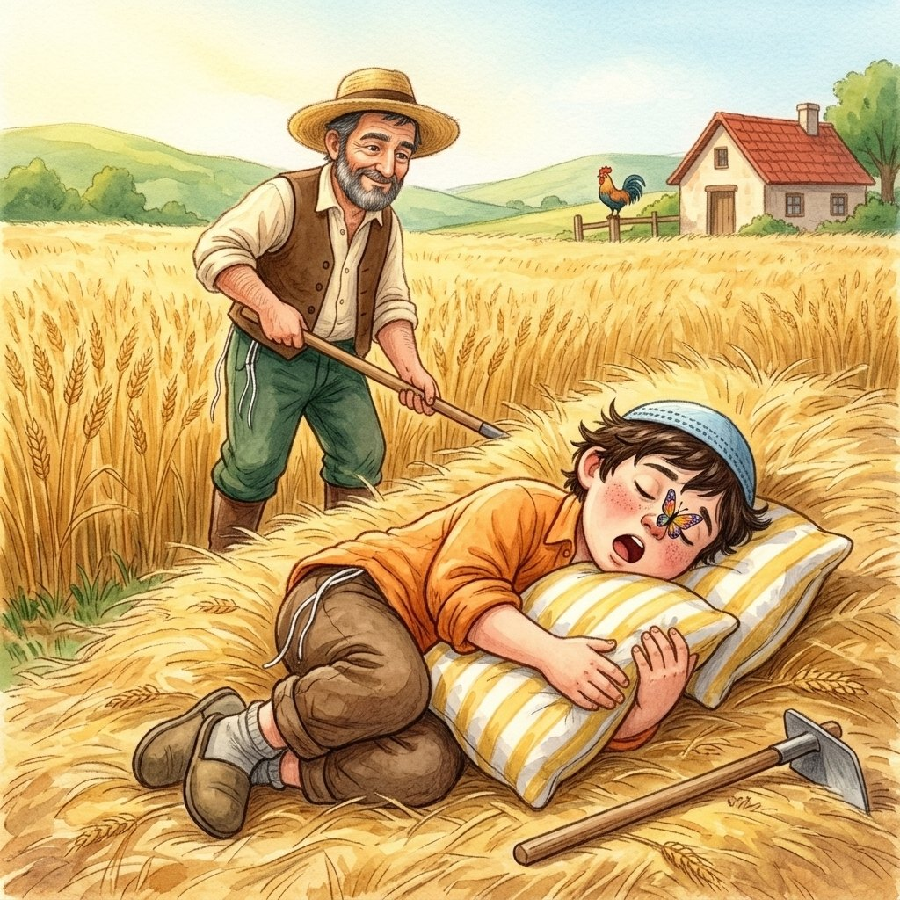
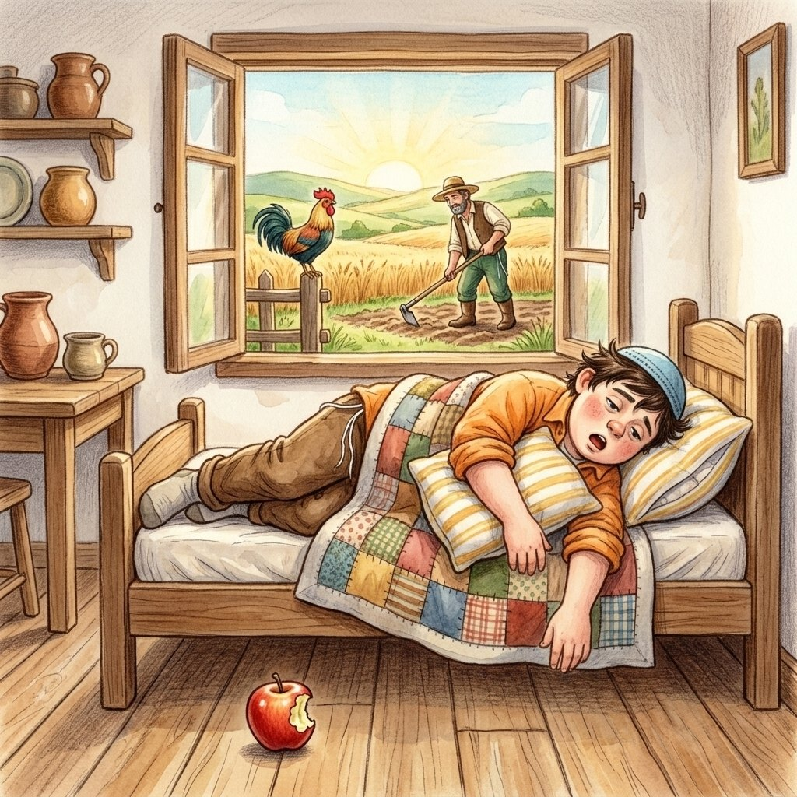
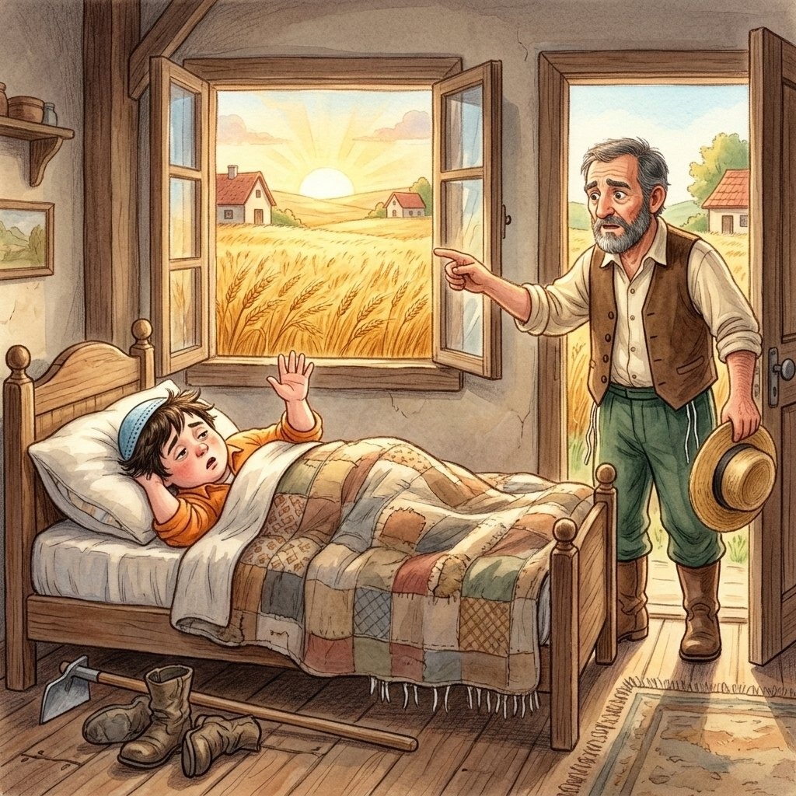
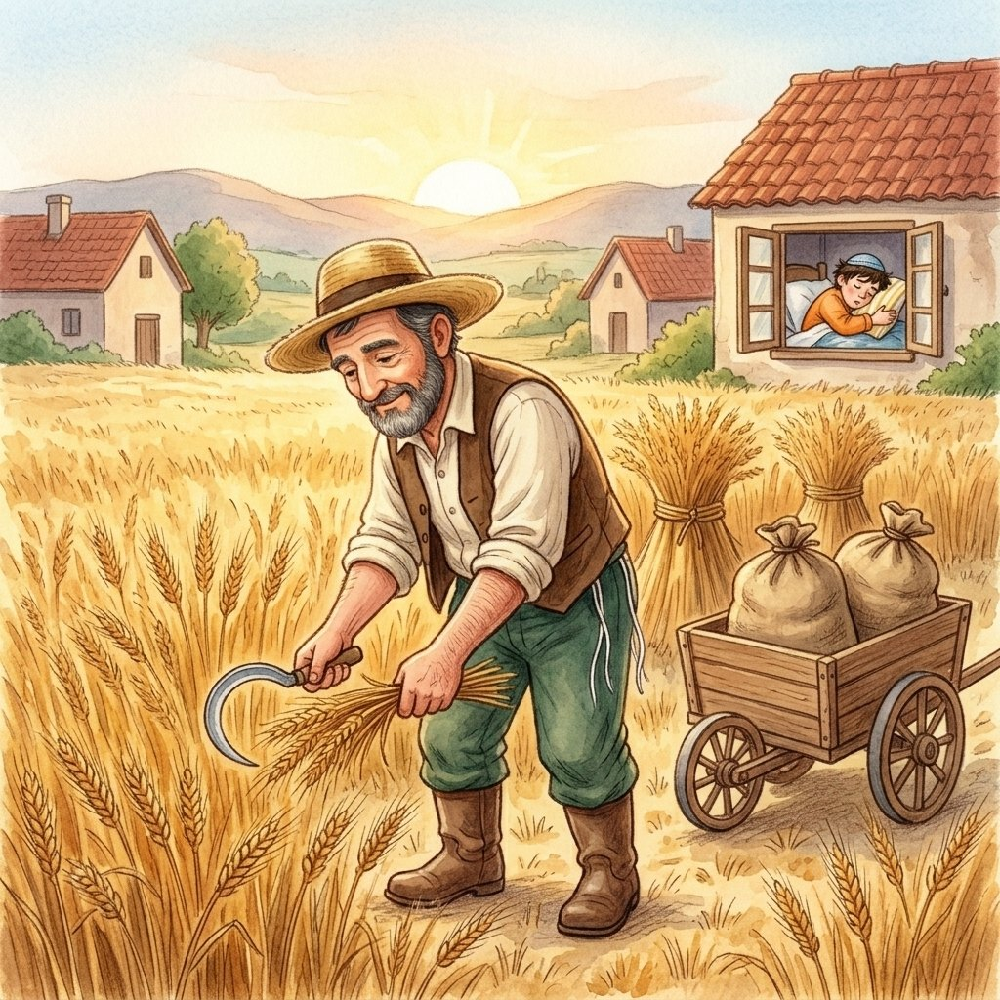

סיפור בהמשכים · 4 פרקים
העצלן שרצה רק לישון
ברוך אוהב לנוח יותר מכל דבר אחר, עד שאבא שלו מציע לו עסקה: שדה חיטה שלם, שכולו שלו. סיפור מצחיק בארבעה פרקים, על מי שזרע ולא קצר.

ברוך אוהב לנוח יותר מכל דבר אחר, עד שאבא שלו מציע לו עסקה: שדה חיטה שלם, שכולו שלו. סיפור מצחיק בארבעה פרקים, על מי שזרע ולא קצר.
כל 4 הפרקים נמצאים כאן, ואפשר לחזור אליהם מתי שרוצים. הכי פשוט: שלחו את הקישור לעצמכם בוואטסאפ.
שליחת הקישור לעצמילוחצים על כפתור ההפעלה של פרק 1. בסוף כל פרק, הפרק הבא מתחיל לבד.

יעקב האיכר קם כל בוקר לפני התרנגולים, ואילו הבן שלו, ברוך, היה זוכה במקום הראשון בתחרות עולמית בעצלנות. ערב אחד יעקב אומר לו שמחר הם צריכים לדבר על משהו חשוב מאוד.
לא הצלחנו לטעון את ההקלטה. בדקו את החיבור לאינטרנט ונסו שוב.
יעקב מציע לברוך עסקה: השדה והרווחים יהיו שלו. יש רק דבר אחד קטן, הוא יצטרך לעבוד. ברוך חורש, זורע, משקה ומתלונן, עד שהשדה כולו הופך לים זהוב.
לא הצלחנו לטעון את ההקלטה. בדקו את החיבור לאינטרנט ונסו שוב.

הגיע היום הגדול, ונשאר רק לקצור. אבל ברוך שוכב במיטה ומודיע שהוא גמר עם השדה: אם החיטים רוצות להיקצר, שיקצרו את עצמן לבד.
לא הצלחנו לטעון את ההקלטה. בדקו את החיבור לאינטרנט ונסו שוב.

יעקב יוצא לבדו לשדה, קוצר, אוסף ומוכר, וחוזר עם שק מלא מטבעות. ומה עם ברוך, שעבד כל השנה? סוף הסיפור והנמשל: מה צריך לעשות כדי לא להפסיד את כל מה שלמדנו.
לא הצלחנו לטעון את ההקלטה. בדקו את החיבור לאינטרנט ונסו שוב.